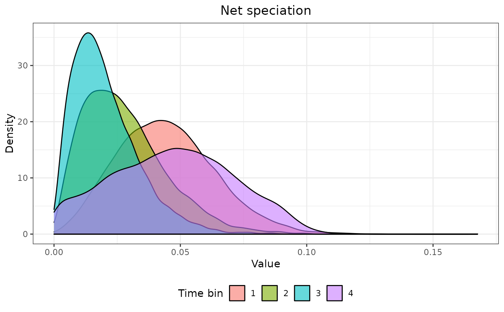
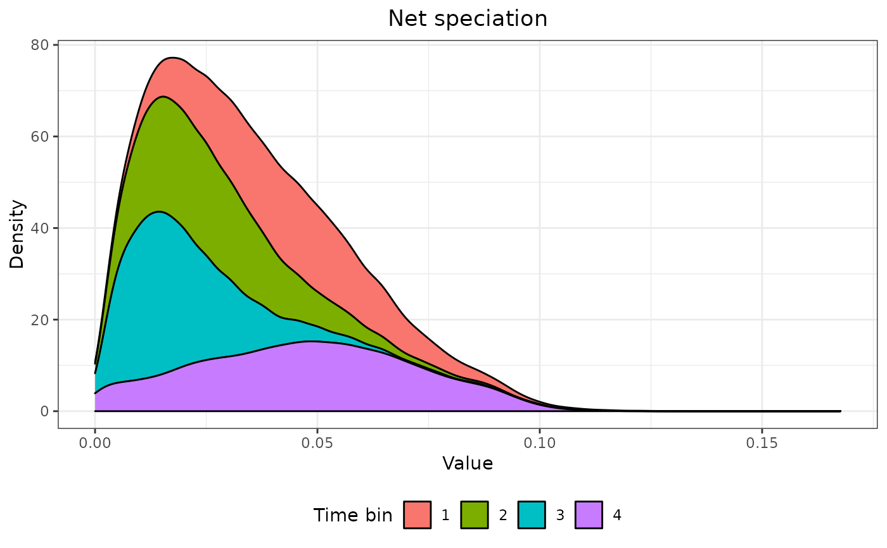
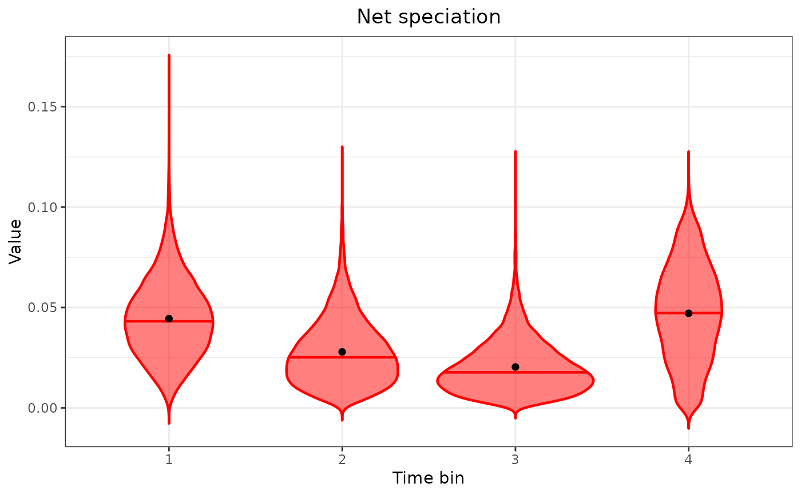

Density plots for each FBD parameter
FBD_dens_plot.RdProduces a density or violin plot displaying the distribution of FBD parameter samples by time bin.
Arguments
- posterior
A data frame of posterior parameter estimates containing a single "Time_bin" column and one column for each FBD parameter value (e.g., "net_speciation", "relative extinction", and "relative fossilization"). Such data frame can be imported using
combine_logfollowed byFBD_reshape.- parameter
A string containing the name of an FBD parameter "net_speciation", "relative_extinction", or "relative_fossilization"; abbreviations allowed.
- type
The type of plot; either
"density"for a density plot or"violin"for violin plots. Abbreviations allowed.- stack
When
type = "density", whether to produce stacked densities (TRUE) or overlapping densities (FALSE, the default). Ignored otherwise.- color
When
type = "violin", the color of the plotted densities.
Details
Density plots are produced using ggplot2::stat_density, and violin plots are produced using ggplot2::geom_violin. On violin plots, a horizontal line indicates the median (of the density), and the black dot indicates the mean.
Note
When setting type = "violin", a warning may appear saying something like "In regularize.values(x, y, ties, missing(ties), na.rm = na.rm) : collapsing to unique 'x' values". This warning can be ignored.
See also
vignette("fbd-params") for the use of this function as part of an analysis pipeline.
ggplot2::stat_density, ggplot2::geom_violin for the underlying functions to produce the plots.
combine_log for producing a single data frame of FBD parameter posterior samples from multiple log files.
FBD_reshape for converting a single data frame of FBD parameter estimates, such as those imported using combine_log, from wide to long format.
FBD_summary, FBD_normality_plot, FBD_tests1, and FBD_tests2 for other functions used to summarize and display the distributions of the parameters.
Examples
# See vignette("fbd-params") for how to use this
# function as part of an analysis pipeline
data("posterior3p")
posterior3p_long <- FBD_reshape(posterior3p)
FBD_dens_plot(posterior3p_long, parameter = "net_speciation",
type = "density", stack = FALSE)

FBD_dens_plot(posterior3p_long, parameter = "net_speciation",
type = "density", stack = TRUE)

FBD_dens_plot(posterior3p_long, parameter = "net_speciation",
type = "violin", color = "red")
